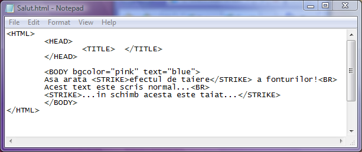
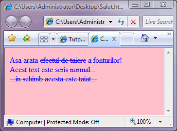

Scriere taiata
Tot textul care urmeaza sa apara cu fonturi taiate in pagina web
va trebui sa fie cuprins intre perechea de etichete STRIKE si respectiv /STRIKE.
Astfel, modul de scriere subliniata este descris in exemplul urmator:


Inapoi la Formatare fonturi